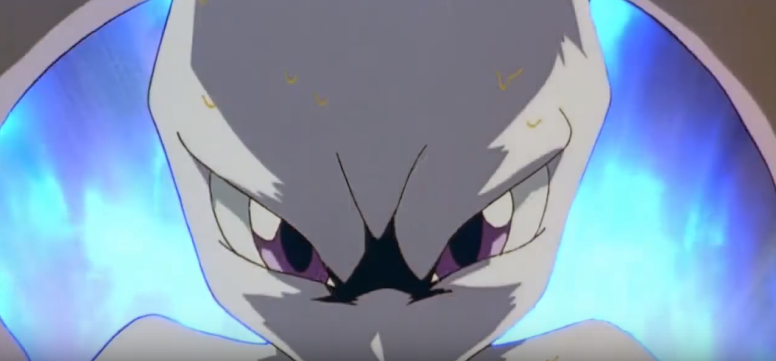
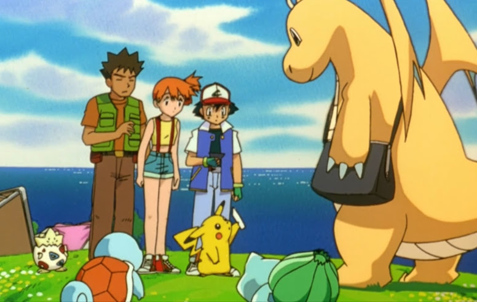
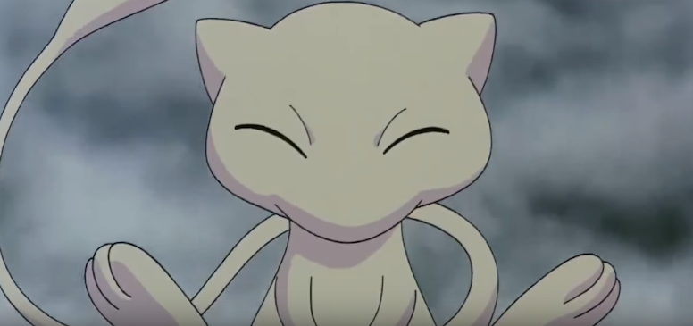
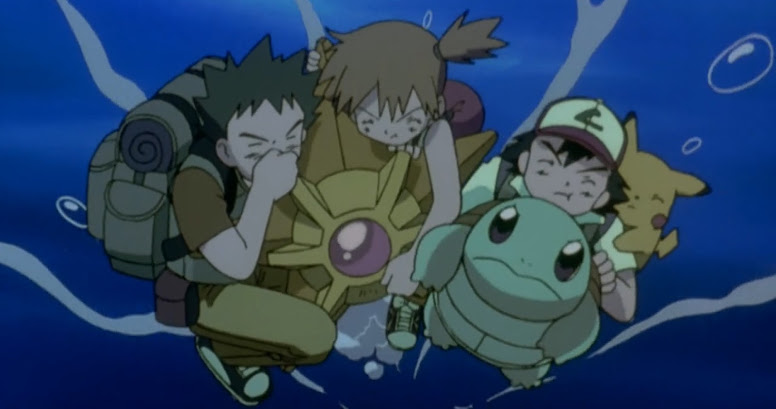
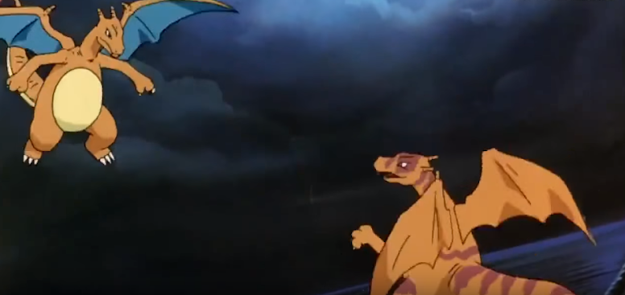
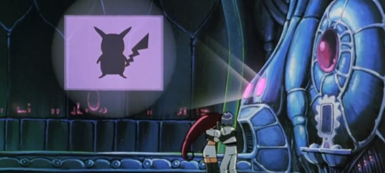
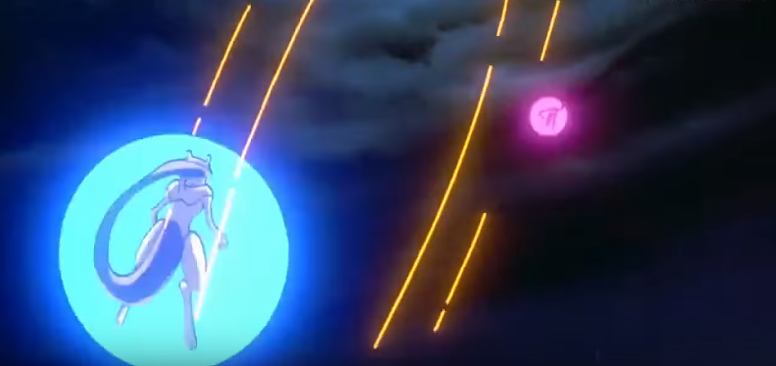
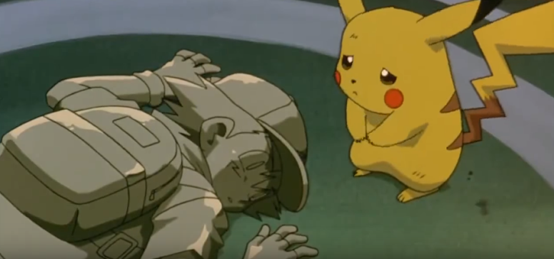
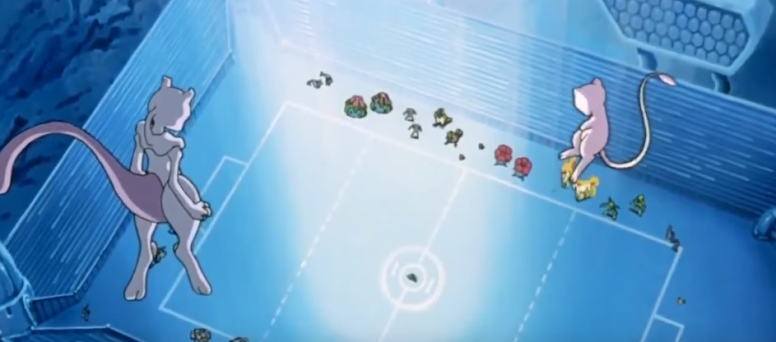

🟡 Nome Japonês: Pocket Monsters the Movie: Mewtwo's Counterattack
🟡 Nome Americano: Pokémon the Movie: Mewtwo Strikes Back
🟡 Nome Brasileiro: Pokémon o Filme: Mewtwo Contra-Ataca
Data de lançamento:
🎞 Japão: 18 de julho de 1998
🎞 EUA: 12 de novembro de 1999
🎞 Brasil: 07 de janeiro de 2000
Pokémon o Filme - Mewtwo Contra-Ataca foi o primeiro filme da franquia, lançado no final da década de 90 e dirigido por Kunihiko Yuyama, diretor chefe da série de televisão Pokémon. No filme, Ash e seus amigos precisam lidar com a ameaça de Mewtwo, um Pokémon desenvolvido em laboratório que possui um ressentimento muito grande dos seres humanos. O longa também apresentou Mew, o Pokémon Mítico da 1ª Geração.
O filme começa com um narrador falando sobre a vida e o mundo Pokémon, enquanto, ao fundo, pode-se ouvir uma voz falando "Quem sou eu?". Ao término disto, surge uma cápsula de vidro contendo um Pokémon adormecido, Mewtwo, que acorda por alguns instantes e fica refletindo sobre o porquê dele estar ali, enquanto alguns cientistas estranhos ficam o olhando. Os cientistas percebem que as ondas cerebrais de Mewtwo estão se agitando e ficam com medo de perdê-lo, enquanto Mewtwo fica pensando que ele não deveria estar dentro daquela cápsula, e sim do lado de fora, onde ele ouvia as vozes dos cientistas. Mewtwo quebra a cápsula de vidro com seus poderes psíquicos e fica sentado em frente aos cientistas, enquanto um deles explica que ele é um clone de Mew (o Pokémon misterioso número #151). Mewtwo reclama que os humanos são cruéis e não se importam com ele. Então, enquanto os cientistas estão comemorando que a clonagem foi um sucesso, Mewtwo começa a destruir o laboratório de clonagem, que fica no meio do mar.
Mewtwo destrói por completo o laboratório, deixando os destroços em chamas. Giovanni (o líder da Equipe Rocket) desce de seu helicóptero para conversar com Mewtwo e convencê-lo a juntar-se a ele. Mewtwo vai com Giovanni e veste uma armadura que controla melhor seus poderes. Depois, mostra-os em batalhas, vencendo facilmente oponentes como um Onix, uma manada de Tauros, um Alakazam, um Magneton e um Nidoking e um Arcanine que pertencem a Gary, no ginásio de Viridian. Após estas batalhas, Mewtwo começa a refletir se aquele era realmente seu destino, então Giovanni aparece falando que Mewtwo deve obedecer aos humanos, pois eles foram os responsáveis pela sua criação. Mewtwo se revolta e destrói a sede da Equipe Rocket (onde ele se encontrava), e volta voando como um jato para a ilha de sua origem, onde só restou destruição. Ele faz uma breve reflexão e diz: "O reino de Mewtwo começará logo!". O cenário do filme muda para onde Ash, Brock e Misty estão (um lugar perto do mar, em que Pikachu e Togepi brincam enquanto Ash reclama que está fraco e com fome). Então, chega um treinador chamado Raymond procurando por ele. De repente, Ash se levanta com uma sede para batalhar e diz para Misty que está fraco demais para trabalhar e que, na verdade, uma batalha Pokémon não é considerado trabalho. Após o término da batalha, na qual Ash ganhou contra três Pokémon com o Choque do Trovão de seu Pikachu, a Equipe Rocket é mostrada, observando-os. Um Fearow voando filmou toda a batalha que Ash teve com uma câmera em seu pescoço. Mewtwo ordena a uma mulher para que convide-os para conhecê-lo. Um Dragonite sai voando de uma torre e chega muito rápido onde Ash e seus amigos estão, derrubando a tenda em que eles estavam almoçando com a força de seu voo. Este Dragonite dá para Ash um aparelho que projeta a imagem desta mulher que enviou o convite, e ela diz que ele e seus amigos foram escolhidos para uma reunião com o melhor treinador do mundo em New Island. Ash aceita o convite. Então, Dragonite sai voando, sendo barrado por uma frigideira pela Equipe Rocket, que estavam querendo saber o que Dragonite enviou para as crianças. Eles veem o convite com a resposta "Sim" marcada e se questionam o que isto poderia significar.
Mewtwo começa uma chuva apenas movendo sua mão direita. Mew, que estava dormindo dentro de uma bolha no fundo de um rio, acorda enquanto a bolha sobe para a superfície com ele dentro. Ele sai voando pelo céu em direção sudeste. Mewtwo continua movendo sua mão e transforma a chuva em uma tempestade. Ash e seus amigos se veem correndo pela tempestade em direção ao cais, onde uma balsa sairia para levá-los a New Island. No cais, eles e outros treinadores reclamam com a guarda Jenny, que disse que a travessia foi cancelada por causa da tempestade. Um treinador decide ir à New Island nadando, porém Jenny diz que se ele tentar fazer isso e seu Pokémon se machucar, ele não poderá ir ao Centro Pokémon porque a enfermeira Joy está desaparecida desde o mês anterior. Alguns treinadores não se importaram, e com seus Pokémon fortes foram até ao palácio em New Island. Ash e seus amigos tentaram ir também, mas não tinham Pokémon forte o suficiente para enfrentar aquela tempestade. Então, a Equipe Rocket disfarçada de vikings oferece uma carona a eles. Durante a ida, uma onda gigante atinge o barco e desmascara a Equipe Rocket. Eles tentam começar o seu famoso lema, porém são interrompidos quando outra grande onda acerta o barco e o destrói.
Misty solta seu Staryu e ajuda Brock a nadar. Depois, encontram Ash e Pikachu nadando com Squirtle, então decidem ficar juntos durante a travessia para poderem sobreviver. A travessia é dura, mas eles conseguem chegar em New Island, que não estava sendo afetada pela tempestade à sua volta. A mulher do convite aparece para os receberem. Ash mostra o convite, e Brock observa bem a mulher e deduz que ela seja a enfermeira Joy desaparecida do Centro Pokémon. A mulher nega, dizendo que morou sua vida inteira naquela ilha com seu mestre, o maior treinador Pokémon do mundo (Mewtwo). Enquanto esta mulher os leva para o palácio, a Equipe Rocket aparece na água sendo salva pelo Weezing de James. Mew chega no palácio e fica brincando com um moinho no telhado. Ash e seus amigos entram no palácio, encontram só mais três treinadores e liberam seus Pokémon. Jessie, James e Meowth tentam encontrar outro jeito de entrar lá quando a porta do palácio se tranca, então eles decidem entrar pelo esgoto. Com seus Pokémon liberados, Ash e seus amigos conversam com os outros treinadores e conhecem os seus Pokémon. Desses três treinadores, dois são homens e uma é mulher. As luzes de repente diminuem e os Pokémon ficam assustados. Então, Mewtwo aparece descendo levitando no centro de uma escada com forma espiral. A mulher misteriosa apresenta o maior mestre Pokémon do mundo e fala que ele é também o Pokémon mais poderoso do mundo: Mewtwo. Um dos treinadores que estavam lá se revolta, dizendo que um Pokémon não pode ser um mestre Pokémon. Então, Mewtwo fala (com seu poder psíquico) e ataca este treinador. O treinador manda seu Gyarados atacar com Hiper Raio, mas Mewtwo faz o ataque voltar, acertando Gyarados. Ele liberta a mulher misteriosa de seu feitiço, e, por acaso, ela era realmente a enfermeira Joy. Porém, por conta do feitiço que Mewtwo impôs a ela, ele a controlava com seus poderes, como se fosse um fantoche vivo. Mewtwo a sequestrou pois seu conhecimento sobre os Pokémon era grande e útil para o plano dele.
Em paralelo, a Equipe Rocket está andando pelo palácio, enquanto Mew os seguia sem eles saberem. Então, eles entram em uma sala estranha com uma máquina grande e cápsulas quase iguais a que Mewtwo nasceu. Nessas cápsulas havia um Charizard, um Blastoise e um Venusaur. A Equipe Rocket estranha tudo aquilo, até que Jessie, sem querer, inicia o sistema da máquina estranha, que estendeu um braço robótico e carregou Meowth até a entrada dela. Jessie e James ficam puxando-o, enquanto a máquina faz o mesmo, até que ela arranca um pelo de Meowth e começa um processo de clonagem que dura alguns segundos. Depois disso, em umas das cápsulas que estavam livres, aparece um clone de Meowth. Na máquina estranha (que também era um computador com uma tela), começa a ser exibido um vídeo gravado da destruição do antigo laboratório daqueles cientistas. A Equipe Rocket fica assistindo o vídeo, enquanto um dos cientistas explica que Giovanni mandou que criassem clones mais fortes que um Pokémon comum, que Mewtwo é um clone de Mew e que ele se revoltou contra os cientistas por eles terem-no criado. No final ele diz "...Sonhamos em criar o Pokémon mais forte do mundo, e conseguimos!". Jessie, James e Meowth ficam refletindo sobre: "Se Mewtwo destruiu o laboratório, alguém o reconstruiu, mas quem?". Tudo isso enquanto Mew os observa. Enquanto isso, Mewtwo explica aos treinadores que os humanos o trouxeram para este mundo para escravizá-lo. Então, com a tempestade ocorrendo, ele irá destruir o mundo dos humanos e criará um mundo para ele. Mewtwo também fala que os Pokémon dos treinadores não merecem ser poupados, pois caíram em desgraça ao servirem seus mestres. Pikachu nega, indicando que ele está errado e que é amigo dos humanos. Então, Mewtwo usa Confusão e o lança para longe, mas Ash o pega. Um dos treinadores decide então tentar capturar Mewtwo, já que ele é um Pokémon, e manda seu Rhyhorn para o ataque. Mewtwo apenas estende sua mão e Rhyhorn fica parado no ar, a mais ou menos um metro do chão, impossibilitado de atacar. Então, Mewtwo usa Confusão novamente e joga Rhyhorn contra um mesa com frutas. Ash, então, o desafia para uma batalha. Os olhos de Mewtwo brilham, pois ele estava usando seus poderes para chamar seus Pokémon clonados (Charizard, Venusaur e Blastoise). A Equipe Rocket os observava com muito medo desses Pokémon saindo de suas cápsulas. Esses Pokémon se dirigem ao salão principal, onde os treinadores estão, e Mew os segue, porém fica escondido da vista de todos. Então, uma grande passagem (que parecia ser uma janela) se abre, dando caminho a um grande estádio Pokémon. O treinador que enviou seu Rhyhorn para atacar Mewtwo, cujo nome é Corey, diz que o Venusaur clonado não é páreo para seu Venusaur - assim como Neesha, a treinadora que estava lá, diz que o falso Blastoise de Mewtwo não podia conter o seu. Ash mostra então seu Charizard, tirando ele de sua Poké Bola. Contudo, assim que Charizard aparece, ele encara Mewtwo e o ataca. Mewtwo fala que ele é muito mal treinado.
Mewtwo se posiciona de um lado do estádio com seus clones e pergunta quem o desafiará primeiro. Corey e seu Venusaur se posicionam, e Corey diz que não o subestimará de novo. Então, Mewtwo manda seu Venusaur Clone para a batalha. Corey ordena que seu Venusaur (cujo apelido é BruteRoot) use o Folha Navalha, porém Mewtwo ordena que seu clone use Chicote de Vinha, que desvia o golpe e ainda consegue levantar BruteRoot e jogá-lo para longe. Neesha vai para a batalha com seu Blastoise (apelidado de ShellShocker), e Mewtwo manda seu Blastoise Clone. Neesha ordena que ShellShocker use Bomba Hidráulica, mas o outro Blastoise usa Giro Rápido, atacando assim o ShellShocker de Neesha, que fez com que ele se chocasse com a parede. Misty tenta convencer Ash a desistir, mas ele não queria e envia seu Charizard para a batalha, dizendo para ele não usar a força, mas a velocidade, que então ele venceria. Então, os dois Charizard voam e têm uma batalha aérea, em que apenas o Charizard de Ash usa Lança-Chamas, enquanto o clone usa apenas Investida. No fim da batalha, no ar, o clone pega o Charizard de Ash pelas costas e o empurra para o chão, levando ele a nocaute. Mewtwo, então, faz três Poké Bolas especiais aparecerem (as chamadas Poké Bolas Clone) para capturar os iniciais evoluídos dos três treinadores. Mewtwo diz que vai fazer mais clones desses Pokémon para ficarem a salvo com ele enquanto sua tempestade destrói o planeta. Ash diz que não deixará que isso aconteça, mas Mewtwo usa Confusão e o joga para longe, fazendo-o cair em cima de Brock. Mewtwo então faz mais Poké Bolas Clone aparecerem e as lança para capturar os outros Pokémon dos treinadores. Os Pokémon lutam por um tempo para não serem capturados, mas as Poké Bolas Clone eram muitas. Ash, então, tem a ideia de colocar Squirtle e Bulbasaur dentro de suas Poké Bolas, porém, as Poké Bolas Clone conseguem capturar até as Poké Bolas com Pokémon dentro. Depois disso, todos, exceto Pikachu e Togepi (que estava na bolsa de Misty) são capturados. Pikachu fica fugindo por um tempo das Poké Bolas Clone, usando seu Choque do Trovão para fazê-las caírem. Funcionava, porém apareciam outras. Ele continuou fugindo enquanto subia a estranha escada espiral no grande salão, com Ash correndo para tentar alcançá-lo e defendê-lo. Mas quando chega lá em cima, Pikachu se desequilibra e cai. Ash se joga para tentar pegá-lo, mas uma Poké Bola Clone captura seu Pikachu. Ele consegue segurar esta Poké Bola Clone e cai dentro de uma piscina que havia no fim da escada. A Poké Bola Clone foge de Ash e entra em um buraco no chão junto com as outras Poké Bolas Clone, para irem até a sala de clonagem. Ash se joga neste buraco dizendo que esta Bola Clone não iria roubar seu Pikachu. As Poké Bolas Clone aparecem na sala da máquina de clonagem, em que uma esteira as leva para dentro da máquina, enquanto a Equipe Rocket observa e fala os nomes dos Pokémon que têm sua forma projetada na parede quando a máquina identifica qual Pokémon há dentro de cada Poké Bola Clone. Enquanto isso, Meowth olha os clones dentro das cápsulas e percebe que os Pokémon clonados ficam em posição fetal. Então, Ash aparece na esteira, vê a Equipe Rocket, mas os ignora, enquanto corre atrás da Poké Bola Clone com seu Pikachu, que está entrando na máquina de clonagem. Ash e a máquina pegam a Poké Bola Clone ao mesmo tempo. Ele consegue pegá-la de volta, mas o computador já havia registrado as informações de Pikachu.
Os braços robóticos da máquina ficam puxando Ash e a Poké Bola Clone para dentro, enquanto Ash luta para se soltar. Ele consegue se soltar, e seu Pikachu sai de dentro da Poké Bola Clone e abraça Ash. Porém, os clones despertam e saem da sala. A máquina, fazendo um barulho estranho, explode e solta todas as Poké Bolas Clone que estavam lá dentro. Assim, elas se abrem e libertam os Pokémon que estavam confinados dentro delas, enquanto a Equipe Rocket fica assustada com todos aqueles Pokémon. A Poké Bola Clone que continha uma Poké Bola de Ash se abre, libertando Squirtle, que corre para abraçá-lo. A mesma coisa ocorre com a Poké Bola de Bulbasaur de Ash. Enquanto isso, Mewtwo e seus três primeiros clones ficam mantendo os outros treinadores junto com a enfermeira Joy no fundo do estádio Pokémon. De repente, ocorre uma explosão vinda do salão principal do palácio e os Pokémon clones de Mewtwo correm em sua direção. Logo após, Ash aparece na fumaça da explosão junto com todos os Pokémon originais atrás dele. Ash então diz que não vai deixar que Mewtwo domine o planeta e corre em sua direção para dar um soco nele, mas quando se aproxima, Mewtwo usa o Confusão e joga Ash para o telhado do palácio. Quando Ash estava para se chocar contra a parede do telhado, uma bolha rosa aparece e impede o impacto. Com ele em cima da bolha, Mew aparece, estoura a bolha e ri quando Ash cai. Mew então cria uma bolha para ele e fica pulando, mas Mewtwo joga uma Bola das Sombras em direção a Mew. No entanto, o Movimento acerta a bolha. Mewtwo então joga outras Bola das Sombras, porém nenhuma acerta Mew, pois ele usa o Teletransporte para escapar dos ataques e ainda acha graça nisso.
Mewtwo diz que agora que Mew apareceu, irá provar que a cópia é mais poderosa que o original. Mewtwo então começa a flutuar e perseguir Mew, até que um de seus ataques o acerta e o joga em direção às nuvens. Porém, uma esfera branca sai das nuvens e acerta Mewtwo. Mew volta ao estádio e Mewtwo, com seus Pokémon clones, desafia Mew com os Pokémon originais. Mew então diz algumas coisas em sua linguagem, mas Meowth traduz o que ele diz: "Ele disse que não se prova nada só mostrando muitos poderes especiais, e que a verdadeira força de um Pokémon vem do coração". Mesmo assim, Mewtwo discorda e lança outro ataque na direção de Mew. O original evade do ataque, que acerta Ash na parte de cima do palácio. Mewtwo então bloqueia todos os ataques especiais de todos os Pokémon que lá estavam, para que haja um confronto cara-a-cara para provar como seus clones são melhores do que os originais. Então, todos os Pokémon avançam contra seus respectivos clones. Uma batalha cruel e violenta começa no estádio, com os Pokémon se enfrentando sem nenhuma esportividade - apenas com ataques físicos, como mordidas, socos, chutes, empurrões, etc., enquanto Mewtwo e Mew se disputavam. Até Pikachu tinha um clone, mas ele não queria lutar. Todos os Pokémon começam a sofrer ali, porque não fazia sentido nenhum eles lutarem daquele jeito. Todos os humanos ali estavam se sentindo mal por verem os Pokémon brigando daquele jeito. Até o clone de Meowth aparece para enfrentá-lo, mas ambos ficam conversando (o clone falando na língua dos Meowth). Eles falam que o que importa não são as diferenças entre eles, mas sim suas semelhanças. A luta entre Mewtwo, Mew e os outros Pokémon continua enquanto Ash desce do palácio. Paralelo a isso, o clone de Pikachu ataca o original, que se recusa a lutar. Então, o clone começa a tapear as bochechas de Pikachu. Ash consegue descer pelas paredes do palácio e fica olhando aqueles Pokémon se enfrentando até a morte. Ash, então, toma uma atitude e, quando Mewtwo e Mew disparam um raio para acertar um ao outro, Ash entra no meio dos dois e recebe o ataque contra si. Ele começa a brilhar, cai no chão e vira uma estátua de pedra. Pikachu corre desesperado tentando fazê-lo levantar. Até o ataca com eletricidade várias vezes, mas não adianta. Pikachu então começa a chorar, junto com os outros Pokémon (inclusive os clones).
As lágrimas dos Pokémon flutuam até Ash como mágica, fazendo-o brilhar, mas ainda sem voltar ao normal. As lágrimas de Pikachu, por sua vez, finalmente fazem Ash voltar ao normal. Eles se abraçam e todos ali ficam emocionados. Mewtwo então percebe, apenas quando todos acertam suas diferenças, o poder que eles têm interiormente. E Mew concorda. Mewtwo também percebe que não importa como uma criatura nasce, mas sim o que ela faz durante sua vida. Então, os clones começam a voar com os poderes de Mew e Mewtwo. Ash pergunta para onde Mewtwo vai, e ele responde que irá para um lugar onde o coração dele poderia aprender o que os corações dos treinadores sabem tão bem. Ele também diz que sempre lembrará do que havia acontecido ali, mas que talvez seja melhor que os treinadores e os Pokémon originais esqueçam o que viram.
🟡 O prólogo do filme deveria ser mais longo, apesar de já ter 10 minutos de duração. Tempos depois ele ganhou uma versão estendida de 20 minutos no Japão e uma de 12 minutos para o ocidente.
🟡 De acordo com Takeshi Shudō, o filme não deveria ter um prólogo. Mas após a versão final ser assistida pelos produtores, eles decidiram inserir esse tempo a mais de filme.
🟡 Alguns Pokémon presentes no pôster sequer aparecem no filme.
🟡 O mini filme que antecede este filme, "As Férias de Pikachu", revelou pela primeiro vez os Pokémon da segunda geração Snubbull e Marill. Além de, no próprio filme, ter sido visto Donphan pela primeira vez.
🟡 Muitos ataques usados por Pokémon no filme não estavam disponíveis no jogo na época. São exemplos o Shadow Ball usada por Mewtwo e Rapid Spin por Blastoise. Além do Donphan de Raymond que utiliza o ataque Rollout.
🟡 Neste filme é a única vez que vemos o Pikachu de Ash entrar em uma Poké Bola, fora a ocasião em que Ash recebe o Pokémon do Professor Carvalho.
🟡 Os únicos Pokémon que não são capturados e clonados por Mewtwo são o Togepi e a Staryu de Misty e o Weezing do James.
🟡 Esse é o único filme que Ash não aparece no pôster na versão americana.
🟡 A versão de VHS deste filme vinha com o trailer do segundo filme de Pokémon e uma carta brinde de Pokémon TCG.
🟡 Mewtwo não deveria ter aparecido na tela até a cena em que os treinadores chegam em sua ilha. Porém, foi necessário exibir a cena da rebelião da Equipe Rocket contra Giovanni, tudo isso graças ao hiato de três meses que o anime entrou após o fatídico e censurado episódio 38.
🟡 De acordo com Takeshi Shudo, Ash não chega a morrer quando os golpes de Mew e Mewtwo colidem e o atinge. Ele fica de fato petrificado e as lágrimas dos Pokémon o trazem de volta.
🟡 No início do filme, Pikachu de Ash derrota o Golem de Raymond com um choque do trovão. O golpe não deveria surtir efeito no Pokémon do tipo terrestre.
🟡 Mewtwo aparece rosa quando começa a criar a tempestade. Depois ele reaparece com a cor correta.
🟡 Quando o Gyarados de Fergus surge da água, ele aparece azul e muda de cor para amarelo.
🟡 Na dublagem, alguns Pokémon são chamados pelo nome errado. Pidgeot é chamado de Pidgeotto. Scyther é chamado de Alakazam, e Sandslash de Sandshrew. Na versão remasterizada Pidgeot teve sua dublagem corrigida.
🟡 Fergus é dito como um treinador que possui apenas Pokémon aquáticos, entretanto ele usa um Nidoqueen.
🟡 Quando Fergus usa seu Nidoqueen. no lugar do Gyarados, ele aparece da mesma cor que um Nidoking.
🟡 Quando Corey mostra seus Pokémon para Ash, as sobrancelhas de Ash aparecem marrons e depois mudam repentinamente para preto.
🟡 Quando os clones surgem do meio da explosão, o clone de Pikachu aparece idêntico ao Pikachu e o Golduck aparece azul, na cor original.
🟡 Na versão japonesa, em nenhum momento é citado que Mewtwo bloqueia as habilidades dos Pokémon, ao contrário do que ouvimos na versão americana.
🟡 De acordo com Takeshi Shudo, Ash não chega a morrer quando os golpes de Mew e Mewtwo colidem e o atinge. Ele fica de fato petrificado e as lágrimas dos Pokémon o trazem de volta.
🟡 No seletor de cenas do DVD, Togepi é listado como o número 152.
🟡 A personalidade de Mewtwo é diferente na dublagem original. Ao contrário da versão americana, Mewtwo é mais arrogante e tem planos de destruir o mundo. Além de se mostrar mais poderoso que Mew a todo o momento, através de suas frases e forma de agir.
🟡 Não existe som de alarme quando Mewtwo acorda no laboratório na versão japonesa, isso foi editado quando o filme recebeu sua versão internacional.
🟡 No diálogo em que Dr. Fuji explica para Mewtwo um pouco de sua origem, na versão original, quando questionado por Mewtwo se Mew seria sua mãe/pai ele diz que "sim e não". Nas versões seguintes, Fuji explica que somente Deus e os humanos são capazes de criar vidas.
🟡 Na versão original japonesa, Giovanni diz a Mewtwo que a armadura dele serve para ele lutar pela Equipe Rocket. Na versão estrangeira o discurso do líder da Equipe Rocket indica que a armadura serve para deixá-lo mais poderoso.
🟡 A clássica cena em que Mewtwo se questiona em pensamento qual o seu propósito, não existe na versão japonesa. Na original é apenas uma cena silenciosa.
🟡 A história de Miranda sobre os Pokémon reviverem pessoas só existe na versão dublada.
🟡 Na cena de luta que abre o filme, quando Bulbasaur enfrenta Donphan, no original Ash move sua boca mas nada é dito. Na versão dublada existe um diálogo.
🟡 Quando a Equipe Rocket fala sobre os vikings, Brock diz que eles não existem mais. Na versão americana, Ash corrige e diz que eles ainda existem em Minnesota, fazendo referência ao time da NFL.
🟡 Na dublagem original a voz do sistema de clones é do Dr. Fuji e não da voz feminina robotizada.
🟡 Na versão americana, a cena da luta dos clones é acompanhada da música "Brother, my brother", passando um clima mais pacifista e doloroso. Na versão japonesa é mais intenso, com a música "Colossal Battle".
🟡 Na cena em que Pikachu tenta acordar Ash de seu estado petrificado com choque, Misty diz na versão japonesa "Pikachu..." e não "Por favor, não...". Existem outras versões reeditadas pelo mundo, em algumas Misty chega a dizer "Minha bicicleta...".
🟡 Na versão inglesa, Brock comenta sobre a beleza da enfermeira Joy e da guarda Jenny. Na original ele fala apenas de Miranda.
🟡 James e Meowth originalmente não falam nada após os créditos.